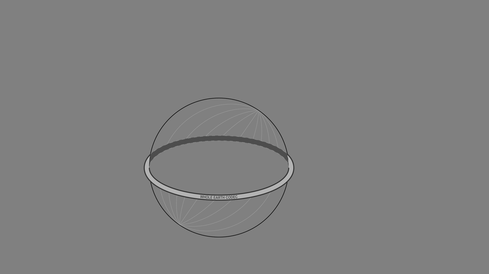

The Whole Earth Codec is a foundation model that transforms planetary-scale, multi-modal ecological data into a single knowledge architecture
Traditional models of the observatory have focused on gazing outward, towards the cosmos. The recent proliferation of planetary sensor networks has inverted this gaze, forming a new kind of planetary observatory that takes the earth itself as its object. Could we cast the entire earth as a distributed observatory, using a foundation model to compose a singular, synthetic representation of the planet? The current generation of models primarily deal with human language, their training corpus scraped from the detritus of the internet. We must widen the aperture of what these models observe to include the non-human.
The Whole Earth Codec is an autoregressive, multi-modal foundation model that allows the planet to observe itself. This proposal radically expands the scope of foundation models, moving beyond anthropocentric language data towards the wealth of ecological information immanent to the planet. Moving from raw sense data to high-dimensional embedding in latent space, the observatory folds in on itself, thus revealing a form of computational reason that transcends sense perception alone: a sight beyond sight. Guided by planetary-scale sensing rather than myopic anthropocentrism, the Whole Earth Codec opens up a future of ambivalent possibility through cross-modal meta-observation, perhaps generating a form of planetary sapience.
Inverting the Observatory
On April 10, 2019, the Event Horizon Telescope produced the first ever “image” of a black hole. To do so, a global network of telescopes together formed a camera whose aperture spanned the width of the planet. In contrast to earlier observatories, this planetary-scale observatory enables a form of sight that transcends the bounded locality of the site: a sight beyond site.
This planetary vision is only possible via the synthetic operations of computation. Computation transforms raw sense data from the distributed observatory into inductive reasoning, producing a form of sight that transcends the immediate act of seeing: a sight beyond sight.
Planetary-scale computation decouples observation from the observer. Like the Event Horizon Telescope, the recent proliferation of terrestrial sensor networks renders the entire Earth a giant observatory.
Rather than looking outwards towards the cosmos, these sensors invert the gaze, taking the Earth as their object of observation.
Fragmented sensors have been deployed to sense the planet, but less attention has been paid towards aggregating and analyzing this data at planetary-scale. Realizing the full potential of this distributed observatory requires both the sensory mechanisms for gathering data and the computational mechanisms for processing it.
Foundation models may enable this synthesis. Trained on vast amounts of data via unsupervised learning, foundation models accumulate a body of general knowledge that can then be fine-tuned for downstream tasks.
Despite their massive scale, the training corpus of existing foundation models reflects a mere fraction of possible data, scraped from the detritus of the internet. Language, let alone human culture, is only a subset of the wealth of information immanent to the biosphere. The aperture of what these models observe should widen to include the ecological and the nonhuman.
There is nothing, however, that limits potential foundation models to text alone. The planet produces stimuli in the form of energy, particles, waves, and fields. Transduced by machine sensors, these signals provide a potential multi-modal input for models.
Current foundation models demonstrate emergent capabilities derived from hidden associations within the vastness of their training data. Integrating multi-modal data from the biosphere into a single knowledge architecture might enable an emergent planetary intelligence, bypassing anthropocentric biases to discover new resonance across modalities.
Enter the Whole Earth Codec, a foundation model that integrates myriad streams of ecological data from the Earth and allows the planet to observe itself.
Folding the Gaze
Central to transformer architecture, which underpins the large language models of today, is the self-attention mechanism. The model learns the importance of each token in a given sequence relative to others, computing the “attention” it should pay and forming a contextualized representation of the sequence.
When the distributed observatory of the Whole Earth Codec inverts the planet’s gaze, it begins an analogous process of self-observation. Just as a transformer learns to pay attention to parts of its input sequence, the Codec learns to observe important cross-modal qualities of the planet. It allows the Earth to observe itself observing itself.
Through this recursive process, the Codec learns to capture dependencies between its myriad inputs. It synthesizes multiple modalities and detects hidden patterns within them. This is not the panopticon-like surveillance of an external subject, but rather the observation of a model turned inwards.
This internal observation is made possible by the dual operations of encoding and embedding. Encoding the syntactical structure of input data via the assignment of tokens unites a variety of sensory inputs within a shared representational space. Bioacoustic audio data can be compared to atmospheric pollutants, for example, due to the fact that both can be understood as possessing patterns, also known as syntax, which are then encoded as tokens. This encoding renders any phenomenon computable.
The act of embedding, wherein tokens are mapped to high-dimensional vector representations, allows for the discovery of hidden patterns. In the case of LLMs, abstract concepts such as tone or sentiment are detected in the high-dimensional topology of the embedding space. “Semantic ascent” occurs via the passage through the subsequent layers of the neural net.
What currently imperceptible, high-level concepts might emerge from embedding the biosphere? Observation moves its gaze away from data alone, towards syntactical relations in high-dimensional latent space. The observatory folds inward, enabling a form of computational reason that transcends the immediacy of sense perception: sight beyond sight.
Assembling the Codec
The Whole Earth Codec is an autoregressive foundation model trained across multiple modalities, which enables comprehension across disparate forms of data and allows an expansive planetary intelligence to emerge.
Sensing Layer
The sensing layer is where the multi-modal data of the biosphere is transduced, recorded, and digitized. Its topology is a distributed mesh network containing federated edge devices and regional data centers.
Foundation Model
Unlike a digital twin, which constructs a mimetic representation of its subject, the Codec uses computational abstractions to access information about the planet that cannot be directly perceived. These abstractions are produced by aggregating sense data within a shared knowledge architecture: the foundation model.
Sensors
Each edge device might consist of different sensors receiving different types of stimuli: image, audio, chemical, lidar, pressure, moisture, magnetic fields. Forms of data produced are just as broad as the forms of sensing.
Federation
Despite processing vast amounts of data, sensitive information is protected through structured transparency. Because of federated learning, the data never leaves the device. Instead, learned weights are pushed to regional data centers.
Spatiotemporal Anchoring
Regardless of modality, a UTC timestamp and GPS satellite signal is attached to each sample. This anchoring allows the model to make associations based on temporal and spatial correlation across modalities.
Encoders
Foundation models are pre-trained on a massive corpus of unsupervised data, and the Whole Earth Codec is no different. Separate encoders are trained for each type of data. These encoders transform disparate, multi-modal forms of input into dense, high-dimensional embeddings within a single cross-modal latent space.
Latent Space
Through contrastive learning, the model projects temporally and spatially correlated data into nearby embeddings within the space. The latent space folds and refolds, forming a composite topology of the biosphere.
Fine-Tuned Models
Leveraging the pre-trained baseline, fine-tuning uses a smaller, labeled dataset to update model weights, often for specific capabilities or to address domain shift. The Codec forms the substrate for a rich ecosystem of third-party, fine-tuned models with improved performance on downstream tasks.
Decoders
Decoders of different modalities are then trained by translating the embeddings into sequence predictions. Due to the massive scale of input, the model only makes a single pass over available data.
Post-Codec Futures
The Codec’s emergent capabilities will act back upon the planet which produced it, remaking it in mundane and transformative ways. While actual capabilities are yet unknown, we speculate upon potential second-order effects.
Generative capacities. Foundation models possess generative capacities, extrapolating from their training data to envision new possibilities. The Codec could leverage these capacities to generate a weather pattern that increases crop yield or a synthetic bacterial-resistant genome. What is the recipe for a forest? Or for a bioweapon?
Mutually assured transparency. The same mechanism that enables these unpredictable forms of generation could also be used for their prevention through mutually assured transparency. Entities across the planet can monitor aggressors or allies equally. Carbon emissions, gene editing, and water contamination can be detected and regulated.
Future of risk. As previously unknown correlations between planetary cause-and-effect are revealed, risk, litigation, and insurance industries will respond accordingly. Responsibility will become more traceable; high-resolution blame will need to be assigned. What new forms of paranoia will omniscient awareness of ecological processes induce?
Human-nonhuman interface. Bypassing anthropocentric notions of translation and communication, the Codec can be reconceptualized as an interface mediating human/nonhuman relations via high-dimensional computational abstraction. It moves us beyond goals like translating whale speech into human speech, towards a more general understanding of non-semantic mediation through syntactic similarities.
Biospheric hallucinations. The hallucinations observed in LLMs, where a statement appears structurally correct but is factually inaccurate, will likely also be present in the Codec. Biospheric hallucinations could include false declarations about the presence of a new genome, or the correlation between rainfall and particulate matter. Knock-on effects from outputs that turn out to be nonsensical may erode trust in the Codec.
These futures are made possible by planetary-scale sensing and computing, directed beyond the domain of the human toward the broader domain of the ecological, of which the human is merely a subset.
The Codec allows the Earth to assemble higher levels of biospheric comprehension through computation. It enables cross-modal synthesis through topological analysis of matching syntax. It forms concepts that are not wholly constructed by humans alone. It actively reshapes the earth rather than passively modeling it.
Through the Whole Earth Codec, modes of observation are distributed, inverted, and folded. The earth can observe itself beyond direct perception alone, towards a more expansive planetary comprehension.
The Whole Earth Codec holds massive potential for public good by allowing a deeper understanding of ecological systems. As a foundation model, it makes wide-ranging downstream applications including assessing ecosystems, altering complex weather patterns, and predicting natural catastrophes possible.
Such potential also makes effective governance of the Codec critical. With high reward comes high risk: beyond its benefits, dual use could proliferate environmental extraction or new bioweaponry. As a planetary-scale machine intelligence, the WEC requires an expansive new conception of governance that is unlike the existing institutions we have in place. Old intuitions about governance become less useful. Governance of this knowledge infrastructure must emerge from the Codec's infrastructure and technical mechanisms, take into account the planet as a stakeholder rather than humans alone, and involve machine intelligence self-governing its own evolution.
The following sections contain guiding principles that inform the proposals for governing the Whole Earth Codec. These principles move us past trading-off existing binaries and instead suggest a new idea of governance as machinic, emergent, and integrated into the wider ecosystem. A map of the governance space of the Codec follows, divided into key ideas around governing infrastructure, information flow, resourcing, and evolution. Just as the Whole Earth Codec provides a previously nonexistent sensing-and-acting apparatus for the biosphere, its governance must also be developed anew.
Governing Principles
While there exist no true precedents of planetary-scale ecological governance, extant systems for governing e.g. the Internet or the Event Horizon Telescope offer valuable design principles that may be applied to the governance of the Codec.
The governance mechanisms of the Whole Earth Codec should
- Harness collective intelligence by integrating, rather than flattening, conflicting ideas
- Provide transparency in service of accountability
- Negotiate both local and planetary scales
- Resist extractivist logics and private capture
- Enable distributed maintenance
- Be aligned with long-term goals of humans and nonhumans alike
- Adapt and evolve in concert with shifting contexts
- Integrate the capacity of the Codec itself for simulation and prediction
The Governance Space
To make sense of the massive space of what governing the Whole Earth Codec includes, the following section partitions it into infrastructure, information flow, resourcing, and evolution. Infrastructure refers to how the physical components invoke a particular type of distributed governance. Information flow refers to how sensitive information is controlled through technical mechanisms. Resourcing refers to how the energy, materials, labor, and capital required for operating the WEC come to be. And evolution refers to how the processes by which the Codec iterates, expands, and modifies itself are changed.
In each space, we propose a key idea which expands existing notions of governance, ultimately making the conditions for governing the Whole Earth Codec possible.
Infrastructure
Across the planet exists an extensive array of sensor networks and data centers, each originally established to address specific domain objectives. The Whole Earth Codec harnesses these once-siloed hardware resources (including sensors, GPUs, chips, cooling systems, cables, and facilities) into a globally interconnected and collaborative framework, laying the foundation for a planetary cognitive infrastructure.
The Whole Earth Codec enables a cooperative model of hardware anchored in various locations, consisting of a diverse range of data types and modalities, that facilitates the collection, processing, and exchange of data across domains and serves as the backbone for a planetary foundation model to operate at scale. Each interconnected node contributing to the network extends the model’s capabilities while providing incentives to each contributor to tap into the computational vigor of the hardware infrastructure and generative capacities of the model that no single domain could have fostered on its own.
The initial stages in building out the infrastructure deliberately rely on already available sites with existing operations in the field, and thus require cross-domain membership of the Whole Earth Codec. Members are network operators and are not governed by a single, centralized authority but instead, a collaborative effort involving various organizations, institutions, countries, and even individuals. The governance and coordination of the global infrastructure that the Whole Earth Codec is built upon are achieved through a combination of international agreements, partnerships, and shared standards.
Information Flow
Typical analysis of technical privacy of systems uses “access” to describe gating information about data, code, or model weights, but thinking of it as “information flow” instead allows a more fluid approach beyond a closed-or-open binary. Information flow thus refers to who knows what, and what they can do with the knowledge. In the Whole Earth Codec, information flow is controlled through privacy-enhacing technologies that allow computation while protecting sensitive information and preventing single-party knowledge over its entirety. No single datacenter contains the entirety of the Codec: training, weights, and inference is distributed across datacenters and each node requires others to operate.
Privacy-enhancing technologies. Technical mechanisms allow us to move past binaries of transparent vs. opaque, open vs. closed, instead creating a paradigm of knowledge generation without individual access to the totality of data.
Multi-party computation. Each datacenter is blinded to the information of the others, but techniques such as multi-party computation allow them to perform computation on their shared data together.
Differential privacy. Individuals are protected through numbers as their data is aggregated into statistical information about a large grouping.
Networked communications. The WEC thus exists not at any individual node but in the web of their networked communications. The information flow of the WEC preserves fine-grained privacy and instead enforces collective communication; without the greater network, no individual sensor or datacenter could compute the knowledge emerging from the Codec. Its mechanisms enforce a collaborative computation that is neither opaque nor transparent.
Resourcing
The Whole Earth Codec is not an external system imposed upon the planet, but rather an integrated planetary infrastructure produced by and through the earth itself. “Planetary” here refers not just to the scale of the infrastructure but also to the earthbound physical, mental, and economic resources of which the system is constructed. Flows of energy, materials, capital, and human labor are required to build and maintain the codec in perpetuity, and these should remain well under ecological limits to ensure a regenerative and sustainable resourcing mechanism.
Energy. Training a planetary-scale foundation model is energy intensive. Training tasks are decentralized so as not to put strain on any particular region; this decentralization is intentionally unequally distributed, in order to prioritize regions with cleaner grids and more robust economies.
Materials. The physical infrastructure of the Codec relies on a range of material resources extracted from the earth. Care should be given to where these resources are sourced from; scaling up the system should not come at the expense of particular regions, especially the low- and middle- income countries that are particularly exploited by current extractivist logics.
Capital. The Codec requires a large upfront investment, and then comparatively little financial resources for its ongoing maintenance and evolution. While the Codec must initially be funded in a market-driven capitalist economic framework, the long-term aim is to decouple the financial resourcing of the Codec from the whims of the market.
Funding sources. Capital could come in many forms:
- Levy on on downstream applications making use of the codec (i.e. a 1% levy on any product, application, etc... developed using the Codec)
- Carbon tax provides initial investment that doubles as reparative mechanism
- Donation / investments from existing institutions, funds, governments
- Insurance / risk as financial instruments that prioritize preventative measures in the present
Fund/Trust. Capital streams are pooled in a fund or trust, designed to benefit a particular purpose (e.g. planetary well-being) rather than a particular person. This body functions as the mechanism for the gathering, governance, and reallocation of the financial resources required to support the Codec.
Fund Governance. Proportions of funds could be earmarked to serve particular ends (e.g. 5% of funds dedicated to AI safety research), allocated to repair existing planetary inequalities (e.g. allocated inversely proportional to country GDP), or allocated in the form of microgrants to develop new functionalities and use cases for the Codec. These priorities and allocations should be decided using collective intelligence mechanisms for opinion polling and information gathering (e.g. quadratic voting, liquid democracy, retroactive funding), as well as the intelligence of the model itself.
Labor. The ongoing maintenance and evolution of the Codec relies on ongoing human labor and ingenuity. This labor is both intellectual and casual, much in the way that the internet is maintained by a mix of technical protocol maintenance, as well as the casual input of everyday users. Technical maintenance and feature implementation will likely be completed by a small group of dedicated experts. A smart-contract enabled guild might allocate funds to individual developers to incentivize maintenance and development tasks. Bug bounties might incentivize the discovery and repair of bugs, or be expanded to tackle deeper challenges such as safety and bias reduction.

Evolution
Finally, governance of the WEC is concerned with the processes by which the codec modifies itself, how it iterates over time: its evolution. How does it expand its sensor network, change its code, withdraw from mistaken advances? The human component of its development is modified through an open-source community of volunteers, with funding mechanisms motivating long-term contribution, but ultimately humans are only a subset of the stakeholders within its evolution. As the WEC is infrastructure of planetary comprehension, its evolution must also be determined by ecological agents, the wider biosphere.
Integrating the planet into decisions around evolution is made possible by different mechanisms for goal-setting and self-governance. Plural voting that involves nonhuman stakeholders can be used for fund allocation towards long term development goals; rather than an individual vote, each party has multiple “credits” it can distribute for a more nuanced value signal.
The machine intelligence of the WEC becomes capable of self-governing and reconstituting itself. It can generate optimal protocols for sending data between datacenters and sensors, over hand-crafted ones. It can learn where to send data to balance anonymizing the content while aggregating relevant data together at different scales. It can even sense blind spots in its own sensor network and determine coordinates to place new sensors.
For any evolution to its system, the WEC can simulate its impact on planet, comparing different futures with one another. Ultimately, this planetary sensing-and-acting apparatus becomes the means by which the biosphere is able to have agency over itself, compared to previous solely human intuitions about modifying the Earth.
Studio Researchers
Connor Cook
Christina Lu
Dalena Tran
Program Director
Benjamin Bratton
Studio Director
Nicolay Boyadjiev
Associate Director
Stephanie Sherman
Senior Program Manager
Emily Knapp
Network Operatives
Dasha Silkina
Andrew Karabanov
Art Direction
Case Miller
Sound Design
Błażej Kotowski
Graphic Design
Callum Dean
Voiceover Engineer
Sam Horn
Editor
Guy Mackinnon-Little
Thanks to The Berggruen Institute and One Project for their support for the inaugural year of Antikythera.
Special thanks to Nicolas Berggruen, Nils Gilman, Dawn Nakagawa, Justin Rosenstein, and Raphael Arar for their visionary support and participation.